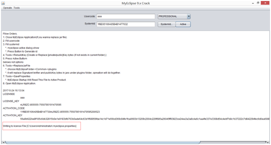
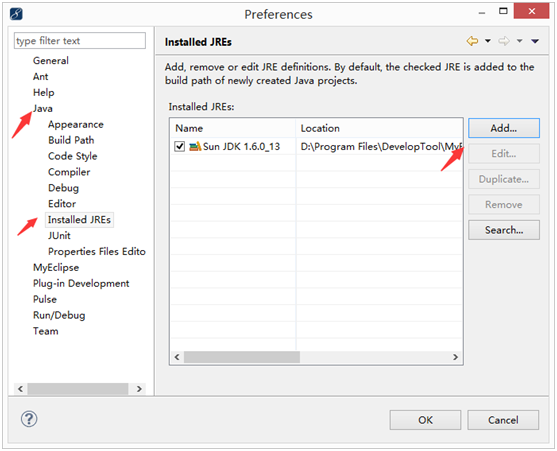

3. 安装Myeclipse
3.1.1. 下载MyEclipse
到网上搜一下MyEclipse的破译版，进行下载
3.1.2. 安装MyEclipse
1) 解压MyEclipse_10.7_XiaZaiBa.zip压缩包，得到解压文件
2) 双击myeclipse-10.7-offline-installer-windows.exe，开始安装Myeclipse
3) 双击之后，打开窗口MyEclipse的安装向导，提示要在你的电脑上安装MyEclipse，点击“下一步”
4) 出现许可协议窗口，勾选“我同意这个协议”，“下一步”
5) 出现的窗口是用来选择MyEclipse的安装路径的，点“change”修改MyEclipse的安装路径，设置完路径之后，点“下一步”
6) 选择安装的软件，用默认的All，下一步
7) 你的操作系统是多少位的就选择多少位，不知道的，可以通过右键“计算机”-->“属性”中查看。
8) 程序开始安装
9) MyEclipse安装成功，去掉勾选“Launch MyEclipse”，然后点击“Finish”
10) 这是桌面没有MyEclipse的快捷方式，那么，我们创建这个快捷方式。打开刚才的安装目录，D:\Program Files\DevelopTool\MyEclipse，可以看到里面有两个文件夹
11) 打开D:\Program Files\DevelopTool\MyEclipse\MyEclipse 10文件夹，里面有myeclipse.exe的执行文件。
12) 右键单击myeclipse.exe，鼠标移到“发送到”，选择“桌面快捷方式”
13) 这时候就可以在桌面上看到MyEclipse的快捷启动方式了。
3.1.3. 破译MyEclipse
1) 安装好MyEclipse后，开始进行破译。在进行破译之前，必须先把JDK安装好，否则没办法进下破译。打开之前解压的MyEclipse压缩包的里的“MyEclipse 破解文件+破解说明”文件，这个文件里存放着MyEclipse破译需要的信息。在进行破译之前，确保你没有运行MyEclipse。双击 cracker.jar 运行激活工具（如果双击不能运行，可以双击同目录下的批处理文件 run.bat 来运行 cracker.jar）
2) 在打开的窗口中
a) 在UserCode中输入用户代码，这个代码可以随便写
b) 然后点击“SystemId...”
c) 在SystemId输入框中生成了SystemId
d) 然后点击“Active”
e) 会自动生成 License key、Activation code 和 Activation key
3) 点击菜单 Tools -> 2.SaveProperties，将上一步生成的 License key、 Activation code 和 Activation key 保存到 C:\Documents and Settings\Administrator\.myeclipse.properties 文件中：
4) 出现这样的提示

5) 点击菜单 Tools -> 1.ReplaceJarFile…，然后选择到 Myeclipse 安装目录下的\Common\plugins 目录，点击“打开”：
6) 等待一会儿，直到出现类似以下的信息，提示替换文件成功：
7) 这时候就可以关闭这个窗口了。
8) 现在我们可以打开 Myeclipse 验证是否已经激活成功！双击桌面上的MyEclipse图标，运行MyEclipse。一段时间后，弹出一个Workspace的向导，Workspace就是以后新建的Java项目存放的位置。点击Browse，设置Workspace的位置。这窗口目前每次打开MyEclipse都会弹出，如果不想它再出现，可以勾选“Use this as the default and do not ask again”，把当前的Workspace设置为默认的Workspace，并且不再询问，然后点击“OK”。
9) 打开了MyEclipse，并且弹出了一个窗口，询问是否要打开软件和工作目录中心，选择不再展示这个信息，然后点“No Thanks”。
10) 点击菜单 MyEclipse -> Subscription Information…:
11) 如果看到“激活状态”（Activation status）为“已激活产品”（Product activated），则表示激活成功了！

3.1.4. 在MyEclipse中配置JDK
1) 打开MyEclipse然后在工具栏上找到window --> preferences
2) 在打开的窗口中找到Java --> Installed JREs 这时大家会看到窗口右侧有一个MyEclipse自带的JDK，先不用管它，按下Add...按钮

3) 则会出现JRE Definition，选择Standard VM,点击Next
4) 这时候打开了这样的窗口
5) 点击Directory...按钮，找到你安装JDK的目录（在JAVA文件夹下），选择jdk的文件夹点确定，回到JRE Definition窗口点击Finish。

6) 然后在右面的列表里在你刚配置的JDK前打上勾，再点OK。
7) 好了，JDK配置成功。
3.1.5. 创建一个Java项目
现在，我们来创建一个简单的Java项目，并新建Java类运行测试一下。
1) 从菜单栏选择 File > New > Java Project：
2) 接着会打开 New Java Project 向导，输入Project Name，其他信息使用默认的就可以了，点击Finish：
3) 稍等片刻会弹出一个切换透视图的对话框，选择Yes和No都可以，这里选择Yes：
4) 接着选择菜单File > New>Class
5) 然后新建类的对话框就出现了，在Name中输入HelloWorld，然后Finish：
6) 接着将编辑器里面的代码修改成如下所示，当你的代码编写完毕后， MyEclipse 会自动将代码编译成类文件。
7) 接下来就可以运行写好的类了，选择菜单 Run → Run
或者按下快捷键 Ctrl+F11，就可以看到 MyEclipse 会自动调用 Java 解释器，然后在 Console 视图中输出“Hello World!”，如下图所示：
8) 到此，一个简单的Java项目——HelloWorld就完成了。